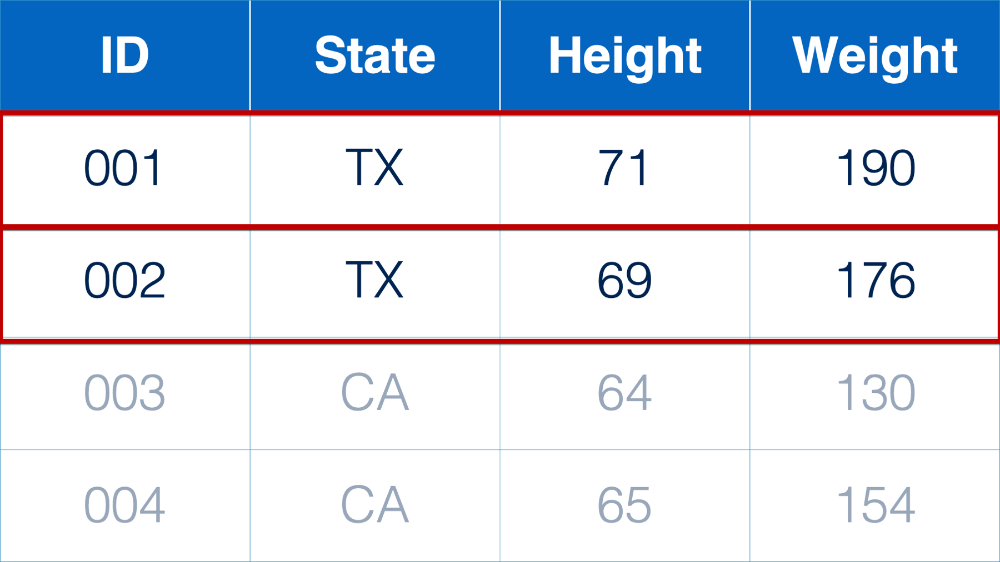
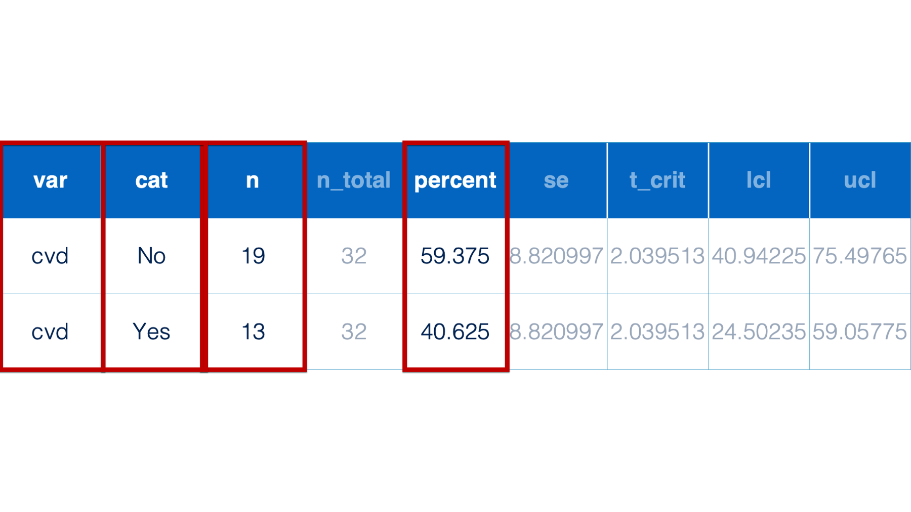

27 Subsetting Data Frames
Subsetting data frames is another one of the most common data management tasks we carryout in our data analysis projects. Subsetting data frames just refers to the process of deciding which columns and rows to keep in your data frame and which to drop.
For example, we may need to subset the rows of a data frame because we’re interested in understanding a subpopulation in our sample. Below, we only want to analyze the rows that correspond to participants from Texas.
Or, perhaps we’re only interested in a subset of the statistics returned to me in a data frame of analysis results. Below, we only want to view and present the variable name, variable category, count, and percent.

Fortunately, the dplyr package includes functions that make it really easy for us to subset our data frames – even in some fairly complicated ways. Let’s start by simulating the same drug trial data we simulated in the last chapter and use it to work through some examples.
As a reminder, we are simulating some drug trial data that includes the following variables:
id: Study id, there are 20 people enrolled in the trial.
year: Follow-up year, 0 = baseline, 1 = year one, 2 = year two.
age: Participant age a baseline. Must be between the ages of 35 and 75 at baseline to be eligible for the study.
drug: Drug the participant received, Placebo or active.
se_headache: Reported headaches side effect, Y/N.
se_diarrhea: Report diarrhea side effect, Y/N.
se_dry_mouth: Report dry mouth side effect, Y/N.
mi: Participant had myocardial infarction in study year, Y/N.
Actually, this data is slightly different than the data we used in the last chapter. Did you catch the difference? Take another look:
# A tibble: 60 × 7
year age drug se_headache se_diarrhea se_dry_mouth mi
<int> <int> <chr> <int> <int> <int> <int>
1 0 65 Active 0 1 1 0
2 1 65 Active 1 1 1 0
3 2 65 Active 1 1 0 0
4 0 49 Active 1 1 1 0
5 1 49 Active 0 0 1 0
6 2 49 Active 1 1 1 0
7 0 48 Placebo 0 0 0 0
8 1 48 Placebo 0 0 0 0
9 2 48 Placebo 0 0 0 0
10 0 37 Placebo 0 0 0 0
# ℹ 50 more rowswe forgot to put a study id in our data. Because we simulated this data above, the best way to fix this oversite is to make the necessary change to the simulation code above. But, let’s pretend that someone sent us this data instead, and we have to add a new study id column to it. Well, we now know how to use the mutate() function to columns to our data frame. We can do so like this:
# A tibble: 60 × 8
year age drug se_headache se_diarrhea se_dry_mouth mi id
<int> <int> <chr> <int> <int> <int> <int> <int>
1 0 65 Active 0 1 1 0 1
2 1 65 Active 1 1 1 0 1
3 2 65 Active 1 1 0 0 1
4 0 49 Active 1 1 1 0 2
5 1 49 Active 0 0 1 0 2
6 2 49 Active 1 1 1 0 2
7 0 48 Placebo 0 0 0 0 3
8 1 48 Placebo 0 0 0 0 3
9 2 48 Placebo 0 0 0 0 3
10 0 37 Placebo 0 0 0 0 4
# ℹ 50 more rowsAnd now we have the study id in our data. But, by default R adds new columns as the rightmost column of the data frame. In terms of analysis, it doesn’t really matter where this column is located in our data. R couldn’t care less. However, when humans look at this data, they typically expect the study id (or some other identifier) to be the first column in the data frame. That is a job for select().
27.1 The select() function
# A tibble: 60 × 7
id year age se_headache se_diarrhea se_dry_mouth mi
<int> <int> <int> <int> <int> <int> <int>
1 1 0 65 0 1 1 0
2 1 1 65 1 1 1 0
3 1 2 65 1 1 0 0
4 2 0 49 1 1 1 0
5 2 1 49 0 0 1 0
6 2 2 49 1 1 1 0
7 3 0 48 0 0 0 0
8 3 1 48 0 0 0 0
9 3 2 48 0 0 0 0
10 4 0 37 0 0 0 0
# ℹ 50 more rows👆Here’s what we did above:
we used the
select()function to change the order of the columns in thedrug_trialdata frame so thatidwould be the first variable in the data frame when reading from left to right.You can type
?selectinto your R console to view the help documentation for this function and follow along with the explanation below.The first argument to the
select()function is.data. The value passed to.datashould always be a data frame. In this book, we will often pass data frames to the.dataargument using the pipe operator (e.g.,df %>% select()).The second argument to the
select()function is.... The value passed to the...argument should column names or expressions that return column positions. We’ll dive deeper into this soon.
More generally, the select() function tells R which variables in your data frame to keep (or drop) and in what order.
The code above gave us the result we wanted. 👏 But, it can be tedious and error prone to manually type every variable name inside the select() function. Did you notice that we forgot the drug column “by accident”?
Thankfully, the select() function is one of several dplyr functions that accept tidy-select argument modifiers (i.e., functions and operators). In this chapter, we will show you some of the tidy-select argument modifiers we regularly use, but you can always type ?dplyr_tidy_select into your console to see a complete list.
In our little example above, we could have used the tidy-select everything() function to make our code easier to write and we wouldn’t have accidently missed the drug column. We can do so like this:
# A tibble: 60 × 8
id year age drug se_headache se_diarrhea se_dry_mouth mi
<int> <int> <int> <chr> <int> <int> <int> <int>
1 1 0 65 Active 0 1 1 0
2 1 1 65 Active 1 1 1 0
3 1 2 65 Active 1 1 0 0
4 2 0 49 Active 1 1 1 0
5 2 1 49 Active 0 0 1 0
6 2 2 49 Active 1 1 1 0
7 3 0 48 Placebo 0 0 0 0
8 3 1 48 Placebo 0 0 0 0
9 3 2 48 Placebo 0 0 0 0
10 4 0 37 Placebo 0 0 0 0
# ℹ 50 more rows👆Here’s what we did above:
we used the
select()function to change the order of the columns in thedrug_trialdata frame so thatidwould be the first variable in the data frame when reading from left to right.Rather than explicitly typing the other column names, we used the
everything()tidy-select function. As you may have guessed,everything()tells R to do X (in this keep) to all the other variables not explicitly mentioned.
For our next example, let’s go ahead and add our mean-centered age variable to our drug_trial data again. We did this for the first time in the last chapter, in case you missed.
# A tibble: 60 × 9
id year age drug se_headache se_diarrhea se_dry_mouth mi age_center
<int> <int> <int> <chr> <int> <int> <int> <int> <dbl>
1 1 0 65 Acti… 0 1 1 0 11.3
2 1 1 65 Acti… 1 1 1 0 11.3
3 1 2 65 Acti… 1 1 0 0 11.3
4 2 0 49 Acti… 1 1 1 0 -4.7
5 2 1 49 Acti… 0 0 1 0 -4.7
6 2 2 49 Acti… 1 1 1 0 -4.7
7 3 0 48 Plac… 0 0 0 0 -5.7
8 3 1 48 Plac… 0 0 0 0 -5.7
9 3 2 48 Plac… 0 0 0 0 -5.7
10 4 0 37 Plac… 0 0 0 0 -16.7
# ℹ 50 more rowsOne way we will often use select() is for performing quick little data checks. For example, let’s say that we wanted to make sure the code we wrote above actually did what we intended it to do. If we print the entire data frame to the screen, age and age_center aren’t directly side-by-side, and there’s a lot of other visual clutter from the other variables. In a case like this, we would use select() to get a clearer picture:
# A tibble: 60 × 2
age age_center
<int> <dbl>
1 65 11.3
2 65 11.3
3 65 11.3
4 49 -4.7
5 49 -4.7
6 49 -4.7
7 48 -5.7
8 48 -5.7
9 48 -5.7
10 37 -16.7
# ℹ 50 more rows👆Here’s what we did above:
we used the
select()function to view theageandage_centercolumns only.we can type individual column names, separated by commas, into
select()to return a data frame containing only those columns, and in that order.
⚠️Warning: Notice that we didn’t assign our result above to anything (i.e., there’s no drug_trial <-). If we had done so, the drug_trial data would have contained these two columns only. We didn’t want to drop the other columns. We could have assigned the result of the code to a different R object (e.g., check_age <-, but it wasn’t really necessary. We just wanted to quickly view age and age_center side-by-side for data checking purposes. When we’re satisfied that we coded it correctly, we can move on. There’s no need to save those results to an R object.
You may also recall that we wanted to subset the drug_trial data to include only the columns we needed for the rowwise demonstrations. Here is the code we used to do so:
# A tibble: 60 × 5
id year se_headache se_diarrhea se_dry_mouth
<int> <int> <int> <int> <int>
1 1 0 0 1 1
2 1 1 1 1 1
3 1 2 1 1 0
4 2 0 1 1 1
5 2 1 0 0 1
6 2 2 1 1 1
7 3 0 0 0 0
8 3 1 0 0 0
9 3 2 0 0 0
10 4 0 0 0 0
# ℹ 50 more rows👆Here’s what we did above:
we used the
select()function to view theidyear,se_headache,se_diarrhea, andse_dry_mouthcolumns only.we used the tidy-select
starts_with()function to select all the side effect variables.
we already know that we can use everything() to select all of the other variables in a data frame, but what if we just want to grab a range or group of other variables in a data frame? tidy-select makes it easy for us. Above, we used the starts_with() function to select all the columns with names that literally start with the letters “se”. Because all of the side effect columns are directly next to each other (i.e., no columns in between them) we could have also used the colon operator : like this:
# A tibble: 60 × 5
id year se_headache se_diarrhea se_dry_mouth
<int> <int> <int> <int> <int>
1 1 0 0 1 1
2 1 1 1 1 1
3 1 2 1 1 0
4 2 0 1 1 1
5 2 1 0 0 1
6 2 2 1 1 1
7 3 0 0 0 0
8 3 1 0 0 0
9 3 2 0 0 0
10 4 0 0 0 0
# ℹ 50 more rowsWhile either method gets us the same result, we tend to prefer using starts_with() when possible. We think it makes your code easier to read (i.e., “Oh, he’s selecting all the side effect columns here.”).
In addition to starts_with(), there is also an ends_with() tidy-select function that can also be useful. For example, we’ve named factors with the _f naming convention throughout the book. We could use that, along with the ends-with() function to create a subset of our data that includes only the factor versions of our side effects columns.
# A tibble: 60 × 5
id year se_headache_f se_diarrhea_f se_dry_mouth_f
<int> <int> <fct> <fct> <fct>
1 1 0 No Yes Yes
2 1 1 Yes Yes Yes
3 1 2 Yes Yes No
4 2 0 Yes Yes Yes
5 2 1 No No Yes
6 2 2 Yes Yes Yes
7 3 0 No No No
8 3 1 No No No
9 3 2 No No No
10 4 0 No No No
# ℹ 50 more rows
Note
🗒Side Note: Variable names are important! Throughout this book, I’ve tried to repeatedly emphasize the importance of coding style – including the way we name our R objects. Many people who are new to data management and analysis (and some who aren’t, MDL) don’t fully appreciate the importance of such things. We hope that the preceding two examples are helping you to see why the little details, like variable names, are important. Using consistent variable naming conventions, for example, allows us to write code that requires less typing, is easier for humans to skim and understand, and is less prone to typos and other related errors.
we can also select columns we want to keep by position instead of name. We don’t do this often. We think it’s generally better to use column names or tidy-select argument modifiers when subsetting columns in your data frame. However, we do sometimes select columns by position when we’re writing our own functions. Therefore, we want to quickly show you what this looks like:
# A tibble: 60 × 3
id year drug
<int> <int> <chr>
1 1 0 Active
2 1 1 Active
3 1 2 Active
4 2 0 Active
5 2 1 Active
6 2 2 Active
7 3 0 Placebo
8 3 1 Placebo
9 3 2 Placebo
10 4 0 Placebo
# ℹ 50 more rows👆Here’s what we did above:
- we passed column numbers to the
select()function to keep the 1st, 2nd, and 4th columns from ourdrug_trialdata frame.
Finally, in addition to using select() to keep columns in our data frame, we can also use select() to explicitly drop columns from our data frame. To do so, we just need to use either the subtraction symbol (-) or the Not operator (!).
Think back to our example from the previous chapter. There we created some new variables that captured information about participants reporting any and all side effects. During that process we created a column that contained a count of the side effects experienced in each year – n_se_year.
# A tibble: 60 × 6
id year n_se_year any_se_year all_se_year any_se
<int> <int> <int> <lgl> <lgl> <lgl>
1 1 0 2 TRUE FALSE TRUE
2 1 1 3 TRUE TRUE TRUE
3 1 2 2 TRUE FALSE TRUE
4 2 0 3 TRUE TRUE TRUE
5 2 1 1 TRUE FALSE TRUE
6 2 2 3 TRUE TRUE TRUE
7 3 0 0 FALSE FALSE FALSE
8 3 1 0 FALSE FALSE FALSE
9 3 2 0 FALSE FALSE FALSE
10 4 0 0 FALSE FALSE FALSE
# ℹ 50 more rowsLet’s say we decided we don’t need n_se_year column now that we created any_se_year, all_se_year, and any_se. We can easily drop it from the data frame in a couple of ways:
# A tibble: 60 × 5
id year any_se_year all_se_year any_se
<int> <int> <lgl> <lgl> <lgl>
1 1 0 TRUE FALSE TRUE
2 1 1 TRUE TRUE TRUE
3 1 2 TRUE FALSE TRUE
4 2 0 TRUE TRUE TRUE
5 2 1 TRUE FALSE TRUE
6 2 2 TRUE TRUE TRUE
7 3 0 FALSE FALSE FALSE
8 3 1 FALSE FALSE FALSE
9 3 2 FALSE FALSE FALSE
10 4 0 FALSE FALSE FALSE
# ℹ 50 more rows# A tibble: 60 × 5
id year any_se_year all_se_year any_se
<int> <int> <lgl> <lgl> <lgl>
1 1 0 TRUE FALSE TRUE
2 1 1 TRUE TRUE TRUE
3 1 2 TRUE FALSE TRUE
4 2 0 TRUE TRUE TRUE
5 2 1 TRUE FALSE TRUE
6 2 2 TRUE TRUE TRUE
7 3 0 FALSE FALSE FALSE
8 3 1 FALSE FALSE FALSE
9 3 2 FALSE FALSE FALSE
10 4 0 FALSE FALSE FALSE
# ℹ 50 more rowsNote that we could have also dropped it indirectly by selecting everything else:
# A tibble: 60 × 5
id year any_se_year all_se_year any_se
<int> <int> <lgl> <lgl> <lgl>
1 1 0 TRUE FALSE TRUE
2 1 1 TRUE TRUE TRUE
3 1 2 TRUE FALSE TRUE
4 2 0 TRUE TRUE TRUE
5 2 1 TRUE FALSE TRUE
6 2 2 TRUE TRUE TRUE
7 3 0 FALSE FALSE FALSE
8 3 1 FALSE FALSE FALSE
9 3 2 FALSE FALSE FALSE
10 4 0 FALSE FALSE FALSE
# ℹ 50 more rowsBut, we think this is generally a bad idea. Not only is it more typing, but skimming through your code doesn’t really tell us (or future you) what you were trying to accomplish there.
27.2 The rename() function
Sometimes, we want to change the names of some, or all, of the columns in our data frame. For me, this most commonly comes up with data I’ve imported from someone else. For example, let’s say I’m importing data that uses column names that aren’t super informative. We saw column names like that when we imported NHANES data. It looked something like this:
# A tibble: 4 × 3
SEQN ALQ101 ALQ110
<int> <dbl> <dbl>
1 1 1 2
2 2 2 2
3 3 1 2
4 4 2 1we previously learned how to change these column names on import (i.e., col_names), but let’s say we didn’t do that for whatever reason. We can rename columns in our data frame using the rename() function like so:
# A tibble: 4 × 3
id drinks_12_year drinks_12_life
<int> <dbl> <dbl>
1 1 1 2
2 2 2 2
3 3 1 2
4 4 2 1👆Here’s what we did above:
we used the
rename()function to change the name of each column in thedrug_trialdata frame to be more informative.You can type
?renameinto your R console to view the help documentation for this function and follow along with the explanation below.The first argument to the
rename()function is.data. The value passed to.datashould always be a data frame. In this book, we will often pass data frames to the.dataargument using the pipe operator (e.g.,df %>% rename()).The second argument to the
rename()function is.... The value passed to the...argument should be a name value pair, or series of name-value pairs separated by columns. The name-value pairs should be in the formatnew name = original name.
we think these names are much better, but for the sake of argument let’s say that we wanted to keep the original names – just coerce them to lowercase. We can do that using the rename_with() variation of the rename() function in combination with the tolower() function:
# A tibble: 4 × 3
seqn alq101 alq110
<int> <dbl> <dbl>
1 1 1 2
2 2 2 2
3 3 1 2
4 4 2 1👆Here’s what we did above:
we used the
rename_with()function to coerce all column names in thedrug_trialdata frame to lowercase.You can type
?renameinto your R console to view the help documentation for this function and follow along with the explanation below.The first argument to the
rename_with()function is.data. The value passed to.datashould always be a data frame. In this book, we will often pass data frames to the.dataargument using the pipe operator (e.g.,df %>% rename_with()).The second argument to the
rename_with()function is.fn. The value passed to the.fnargument should be a function that you want to apply to all the columns selected in the.colsargument (see below).The third argument to the
rename_with()function is.cols. The value passed to the.colsargument should be the columns you want to apply the function passed to the.fnargument to. You can select the columns using tidy-select argument modifiers.
27.3 The filter() function
we just saw how to keep and drop columns in our data frame using the select() function. We can keep and drop rows in our data frame using the filter() function or the slice() function.
Similar to selecting columns by position instead of name:
# A tibble: 60 × 3
id year drug
<int> <int> <chr>
1 1 0 Active
2 1 1 Active
3 1 2 Active
4 2 0 Active
5 2 1 Active
6 2 2 Active
7 3 0 Placebo
8 3 1 Placebo
9 3 2 Placebo
10 4 0 Placebo
# ℹ 50 more rowswe can also select rows we want to keep by position. Again, we don’t do this often, but it is sometimes useful when we’re writing our own functions. Therefore, we want to quickly show you what this looks like:
# A tibble: 5 × 12
id year age drug se_headache se_diarrhea se_dry_mouth mi age_center
<int> <int> <int> <chr> <int> <int> <int> <int> <dbl>
1 1 0 65 Active 0 1 1 0 11.3
2 1 1 65 Active 1 1 1 0 11.3
3 1 2 65 Active 1 1 0 0 11.3
4 2 0 49 Active 1 1 1 0 -4.7
5 2 1 49 Active 0 0 1 0 -4.7
# ℹ 3 more variables: se_headache_f <fct>, se_diarrhea_f <fct>,
# se_dry_mouth_f <fct>👆Here’s what we did above:
we used the
slice()function to keep only the first 5 rows in thedrug_trialdata frame.You can type
?sliceinto your R console to view the help documentation for this function and follow along with the explanation below.The first argument to the
slice()function is.data. The value passed to.datashould always be a data frame. In this book, we will often pass data frames to the.dataargument using the pipe operator (e.g.,df %>% slice()).The second argument to the
slice()function is.... The value passed to the...argument should be a row numbers you want returned to you.
Generally speaking, we’re far more likely to use the filter() function to select only a subset of rows from our data frame. Two of the most common scenarios, of many possible scenarios, where want to subset rows include:
Performing a subgroup analysis. This is a situation where we want our analysis to include only some of the people (or places, or things) in our data frame.
Performing a complete case analysis. This is a situation where we want to remove rows that contain missing values from our data frame before performing an analysis.
27.3.1 Subgroup analysis
Let’s say that we want to count the number of people in the drug trial who reported having headaches in the baseline year by drug status (active vs. placebo). We would first use filter() to keep only the rows that contain data from the baseline year:
# A tibble: 20 × 12
id year age drug se_headache se_diarrhea se_dry_mouth mi age_center
<int> <int> <int> <chr> <int> <int> <int> <int> <dbl>
1 1 0 65 Acti… 0 1 1 0 11.3
2 2 0 49 Acti… 1 1 1 0 -4.7
3 3 0 48 Plac… 0 0 0 0 -5.7
4 4 0 37 Plac… 0 0 0 0 -16.7
5 5 0 71 Plac… 0 0 0 0 17.3
6 6 0 48 Plac… 0 0 0 0 -5.7
7 7 0 59 Acti… 1 1 1 0 5.3
8 8 0 60 Plac… 0 0 0 0 6.3
9 9 0 61 Acti… 1 1 1 0 7.3
10 10 0 39 Acti… 1 0 1 0 -14.7
11 11 0 61 Plac… 0 0 0 0 7.3
12 12 0 62 Plac… 1 0 1 0 8.3
13 13 0 43 Plac… 0 0 0 0 -10.7
14 14 0 63 Plac… 0 0 0 0 9.3
15 15 0 69 Acti… 1 1 1 0 15.3
16 16 0 42 Plac… 0 0 0 0 -11.7
17 17 0 60 Plac… 0 0 0 0 6.3
18 18 0 41 Acti… 1 1 1 0 -12.7
19 19 0 43 Plac… 0 0 0 0 -10.7
20 20 0 53 Plac… 0 0 0 0 -0.700
# ℹ 3 more variables: se_headache_f <fct>, se_diarrhea_f <fct>,
# se_dry_mouth_f <fct>👆Here’s what we did above:
we used the
filter()function to keep only the rows in thedrug_trialdata frame that contain data from the baseline year.You can type
?filterinto your R console to view the help documentation for this function and follow along with the explanation below.The first argument to the
filter()function is.data. The value passed to.datashould always be a data frame. In this book, we will often pass data frames to the.dataargument using the pipe operator (e.g.,df %>% filter()).The second argument to the
filter()function is.... The value passed to the...argument should be a name-value pair or multiple name value pairs separated by commas. The...argument is where you will tellfilter()how to decide which rows to keep.
Warning
⚠️Warning: Remember, that in the R language = (i.e., one equal sign) and == (i.e., two equal signs) are different things. The = operator tells R to make the thing on the left equal to the thing on the right. In other words, it assigns values. The == asks R if the thing on the left is equal to the thing on the right. In other words, it test the equality of values.
Now, we can use the descriptive analysis techniques we’ve already learned to answer our research question:
# A tibble: 4 × 3
# Groups: drug [2]
drug se_headache_f n
<chr> <fct> <int>
1 Active No 1
2 Active Yes 6
3 Placebo No 12
4 Placebo Yes 1So, 6 out of 7 (~ 86%) of the people in our active drug group reported headaches in the baseline year. Now, let’s say that we have reason to suspect that the drug affects people differently based on their age. Let’s go ahead and repeat this analysis, but only in a subgroup of people who are below age 65. Again, we can use the filter() function to do this:
# A tibble: 3 × 3
# Groups: drug [2]
drug se_headache_f n
<chr> <fct> <int>
1 Active Yes 5
2 Placebo No 11
3 Placebo Yes 1Wow! It looks like everyone under age 65 who received active drug also reported headaches!
we can show this more explicitly by using passing the value FALSE to the .drop argument of group_by(). This tells R to keep all factor levels in the output, even if they were observed in the data zero times.
# A tibble: 4 × 3
# Groups: drug [2]
drug se_headache_f n
<chr> <fct> <int>
1 Active No 0
2 Active Yes 5
3 Placebo No 11
4 Placebo Yes 1Finally, we could make our code above more succinct by combining our two filter functions into one:
# A tibble: 4 × 3
# Groups: drug [2]
drug se_headache_f n
<chr> <fct> <int>
1 Active No 0
2 Active Yes 5
3 Placebo No 11
4 Placebo Yes 1👆Here’s what we did above:
- we used the
filter()function to keep only the rows in thedrug_trialdata frame that contain data from the baseline year AND (&) contain data from rows with a value that is less than 65 in theagecolumn. The AND (&) here is important. A row must satisfy both of these conditions in order for R to keep it in the returned data frame. If we had used OR instead (filter(year == 0 | age < 65)), then only one condition OR the other would need to be met for R to keep the row in the returned data frame.
Note
🗒Side Note: In the R language, we use the pipe operator to create OR conditions. The pipe operator looks like | and is probably the key immediately to the right of your enter/return key on your keyboard.
27.3.2 Complete case analysis
Now let’s say that we want to compare age at baseline by drug status (active vs. placebo). Additionally, let’s say that we have some missing values in our data.
Let’s first simulate some new data with missing values:
# A tibble: 10 × 12
id year age drug se_headache se_diarrhea se_dry_mouth mi age_center
<int> <int> <int> <chr> <int> <int> <int> <int> <dbl>
1 1 0 NA Acti… 0 1 1 0 11.3
2 2 0 49 Acti… 1 1 1 0 -4.7
3 3 0 48 Plac… 0 0 0 0 -5.7
4 4 0 37 <NA> 0 0 0 0 -16.7
5 5 0 71 Plac… 0 0 0 0 17.3
6 6 0 48 Plac… 0 0 0 0 -5.7
7 7 0 59 Acti… 1 1 1 0 5.3
8 8 0 60 Plac… 0 0 0 0 6.3
9 9 0 61 Acti… 1 1 1 0 7.3
10 10 0 39 Acti… 1 0 1 0 -14.7
# ℹ 3 more variables: se_headache_f <fct>, se_diarrhea_f <fct>,
# se_dry_mouth_f <fct>👆Here’s what we did above:
we used the
filter()andslice()functions to create a new data frame that contains only a subset of our originaldrug_trialdata frame. The subset includes only the first 10 rows of the data frame remaining after selecting only the baseline year rows from the original data frame.we used the
replace()function to replace the first value of age withNAand the fourth value ofdrugwithNA.You can type
?replaceinto your R console to view the help documentation for this function.
If we try to answer our research question above without dealing with the missing data, we get the following undesirable results:
# A tibble: 3 × 2
drug mean_age
<chr> <dbl>
1 Active NA
2 Placebo 56.8
3 <NA> 37 One way we can improve our result is by adding the na.rm argument to the mean() function.
# A tibble: 3 × 2
drug mean_age
<chr> <dbl>
1 Active 52
2 Placebo 56.8
3 <NA> 37 But, we previously saw how it can sometimes be more efficient to drop the row with missing data from the data frame explicitly. This is called a complete case analysis or list-wise deletion.
# A tibble: 3 × 2
drug mean_age
<chr> <dbl>
1 Active 52
2 Placebo 56.8
3 <NA> 37 However, we still have that missing value for drug. We can easily drop the row with the missing value by adding an additional value to the ... argument of our filter() function:
# A tibble: 2 × 2
drug mean_age
<chr> <dbl>
1 Active 52
2 Placebo 56.827.4 Deduplication
Another common data management task that we want to discuss in this chapter is deduplicating data. Let’s go ahead and simulate some data to illustrate what we mean:
# A tibble: 12 × 3
id day x
<dbl> <dbl> <dbl>
1 1 1 1
2 1 2 11
3 2 1 12
4 2 2 13
5 2 2 14
6 3 1 12
7 3 1 12
8 3 2 13
9 4 1 13
10 5 1 10
11 5 2 11
12 5 1 10All id’s but 4 have multiple observations.
ID 2 has row with duplicate values for
idandday, but a non-duplicate value forx. These rows are partial duplicates.ID 3 has a row with duplicate values for all three columns (i.e.,
3, 1, 12). These rows are complete duplicates.ID 5 has a row with duplicate values for all three columns (i.e.,
5, 1, 10). These rows are complete duplicates. However, they are not in sequential order in the dataset.
27.4.1 The distinct() function
we can use dplyr’s distinct() function to remove all complete duplicates from the data frame:
# A tibble: 10 × 3
id day x
<dbl> <dbl> <dbl>
1 1 1 1
2 1 2 11
3 2 1 12
4 2 2 13
5 2 2 14
6 3 1 12
7 3 2 13
8 4 1 13
9 5 1 10
10 5 2 11👆Here’s what we did above:
we used the
distinct()function to keep only one row from a group of complete duplicate rows in thedfdata frame.You can type
?distinctinto your R console to view the help documentation for this function and follow along with the explanation below.The first argument to the
distinct()function is.data. The value passed to.datashould always be a data frame. In this book, we will often pass data frames to the.dataargument using the pipe operator (e.g.,df %>% distinct()).The second argument to the
distinct()function is.... The value passed to the...argument should be the variables to use when determining uniqueness. Passing no variables to the...argument is equivalent to pass all variables to the...argument.
27.4.2 Complete duplicate row add tag
If want to identify the complete duplicate rows, without immediately dropping them, we can use the duplicated() function inside the mutate() function. This creates a new column in our data frame that has the value TRUE when the row is a complete duplicate and the value FALSE otherwise.
# A tibble: 12 × 4
id day x dup
<dbl> <dbl> <dbl> <lgl>
1 1 1 1 FALSE
2 1 2 11 FALSE
3 2 1 12 FALSE
4 2 2 13 FALSE
5 2 2 14 FALSE
6 3 1 12 FALSE
7 3 1 12 TRUE
8 3 2 13 FALSE
9 4 1 13 FALSE
10 5 1 10 FALSE
11 5 2 11 FALSE
12 5 1 10 TRUE Alternatively, we could get the same result using:
# A tibble: 12 × 5
# Groups: id, day, x [10]
id day x n_row dup
<dbl> <dbl> <dbl> <int> <lgl>
1 1 1 1 1 FALSE
2 1 2 11 1 FALSE
3 2 1 12 1 FALSE
4 2 2 13 1 FALSE
5 2 2 14 1 FALSE
6 3 1 12 1 FALSE
7 3 1 12 2 TRUE
8 3 2 13 1 FALSE
9 4 1 13 1 FALSE
10 5 1 10 1 FALSE
11 5 2 11 1 FALSE
12 5 1 10 2 TRUE 👆Here’s what we did above:
we used the
group_by_all()function to split our data frame into multiple data frames grouped by all the columns indf.we used the
row_number()to sequentially count every row in each of the little data frames created bygroup_by_all(). We assigned the sequential count to a new column namedn_row.we created a new column named
dupthat has a value ofTRUEwhen the value ofn_rowis greater than 1 andFALSEotherwise.
Notice that R only tags the second in a set of duplicate rows as a duplicate. Below we tag both rows with complete duplicate values.
# A tibble: 12 × 4
id day x dup
<dbl> <dbl> <dbl> <lgl>
1 1 1 1 FALSE
2 1 2 11 FALSE
3 2 1 12 FALSE
4 2 2 13 FALSE
5 2 2 14 FALSE
6 3 1 12 TRUE
7 3 1 12 TRUE
8 3 2 13 FALSE
9 4 1 13 FALSE
10 5 1 10 TRUE
11 5 2 11 FALSE
12 5 1 10 TRUE 27.4.3 Partial duplicate rows
# A tibble: 9 × 3
id day x
<dbl> <dbl> <dbl>
1 1 1 1
2 1 2 11
3 2 1 12
4 2 2 13
5 3 1 12
6 3 2 13
7 4 1 13
8 5 1 10
9 5 2 11👆Here’s what we did above:
we used the
distinct()function to keep only one row from a group of duplicate rows in thedfdata frame.You can type
?distinctinto your R console to view the help documentation for this function and follow along with the explanation below.This time we passed the column names
idanddayto the...argument. This tells R to consider any rows that have the same value ofidANDdayto be duplicates – even if they have different values in their other columns.The
.keep_allargument tells R to return all of the columns indfto us – not just the columns that we are testing for uniqueness (i.e.,idandday).
27.4.4 Partial duplicate rows - add tag
we can tag partial duplicate rows in a similar fashion to the way we tagged complete duplicate rows above:
#| echo: false #| rows-print: 12 df %>% group_by(id, day) %>% mutate( count = row_number(), # Counts rows by group dup = count > 1 # TRUE if there is more than one row per group )